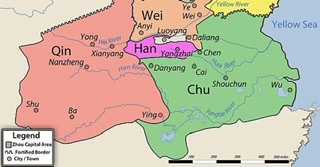

Civil war and many states fighting for control of china led to a period of unrest known as the warring states.
It was known as the warring states due to the constant fighting and unrest.
Legalism became a big thing during the warring states
The Qin grew to power and took over China, establshing order.
